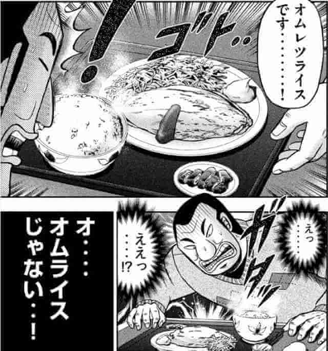
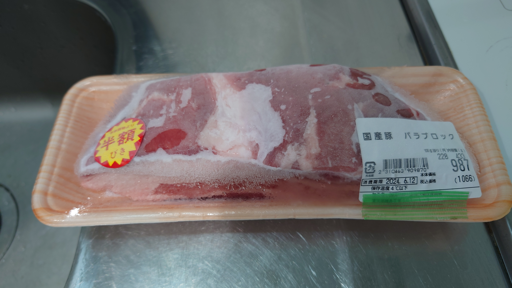
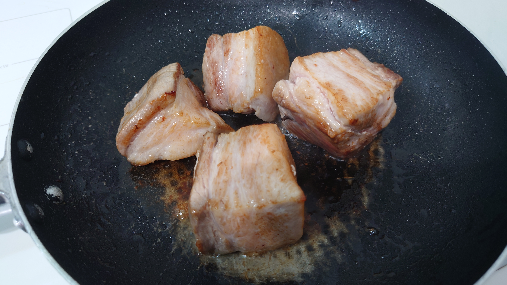
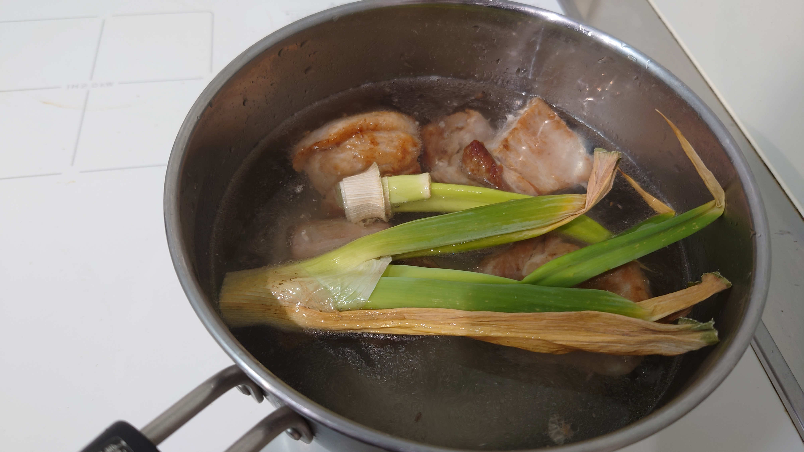
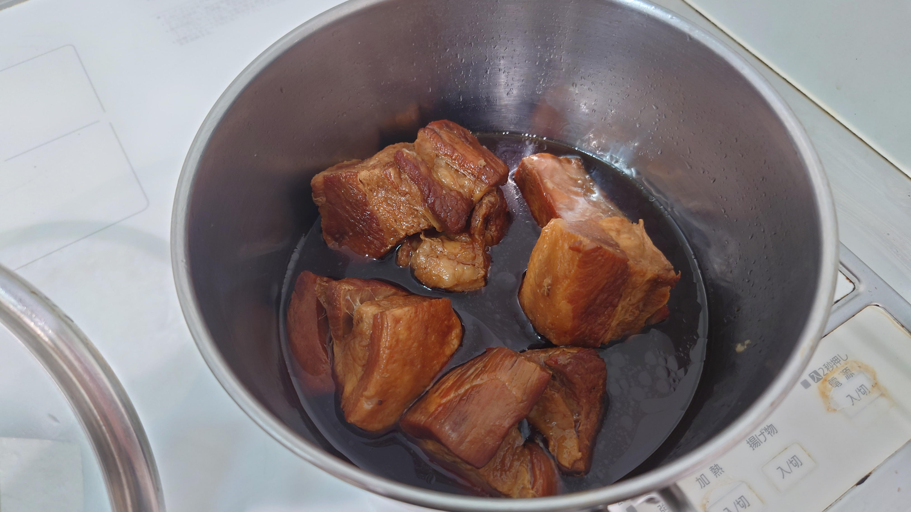
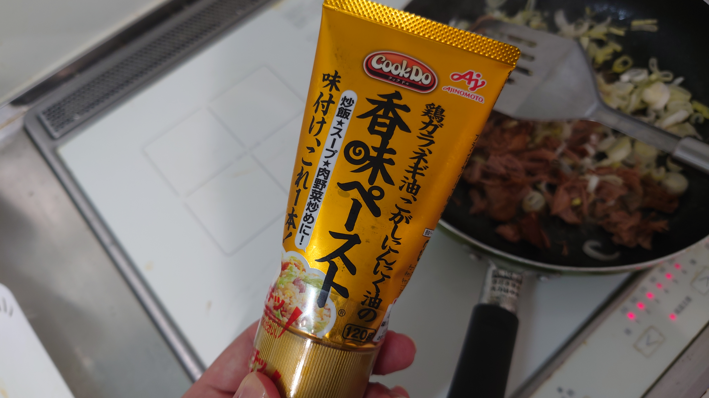
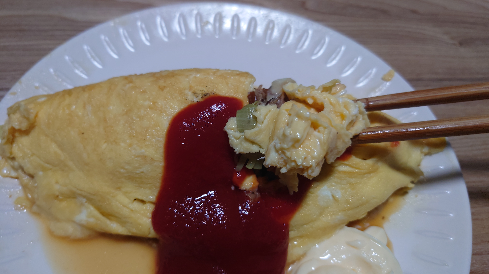

こんにちは、ザクザク食感です。
今日は何もできなかった～～～
のでこの前つくったオムレツライスを供養します
オムレツライスは1日外出録ハンチョウっていうカイジの外伝に出てくる料理で、オムレツとご飯の定食のこと 
ニコ動が鯖落ちしてから見るものが何もないので、6年前にアニメ化された中間管理録トネガワを今更見た
その作品内で出てきたオムレツライスがめちゃめちゃ美味しそうだったので、今回つくるに至ったってワケ
チャーシューとネギをウェイパーで炒めたものがオムレツの具なので、チャーシューをつくる
半額のときに買っておいた豚バラブロックを解凍（半額にしてやっとグラム114円で、世知辛い……）

豚バラは煮込む前に一旦焼いておく
そのまま煮てもいいけど、油が多すぎると重たいのでめっちゃ焼く

死にかけてるネギの青いところと一緒に2時間ぐらい煮た
うちはIHなので電気代がやばい

そのあと醤油とみりんと水で1時間ぐらい煮て、チャーシューは完成
チャーシューと角煮の違いを知らないけど、これは角煮な気がする……

チャーシューとネギを刻んでウェイパーで炒めたかったけどうちにはないので香味ペーストを使いました

で頑張ってたまごで包んで完成！！！包むところは写真撮る余裕なかったのでナシ！！！！！
めちゃうまい！！！ケチャップと香味ペーストの味が意外と競合しなくて美味しかったです！
チャーシューは絶対に市販のものでよかったです

あとマヨもよく合うと思います
もうマヨはない───
それでは、さようなら。
と思ったけど最近のいいね欄の一部も紹介しちゃおっかな！
わかる 美味しんぼそこそこ見たけど、山岡さんは父である海原雄山の身勝手な行動を心底憎んでいるけど結果的に自分もそれに近いことをしていて、そういう血のつながりの描写があったシンエヴァ見た後に美味しんぼ見てるんだけど、同じ話の気がしてきた
— Masayoshi Iimori (@masayoshiiimori) June 15, 2024
What did I just see? 😭 pic.twitter.com/H3lrQHcoUB
— NO CONTEXT HUMANS (@HumansNoContext) June 16, 2024
グアっンンンンン♡ハアハア4ヶ月と1万円(六兆年と一夜物語)返してください
— ダイナミック散歩 (@mother_mom_12) June 17, 2024
Yes - Roundabout but with the Super Mario 64 soundfont https://t.co/efqm2GrE8i
— 非破壊 (@safety_euglena) June 17, 2024
めちゃ良い！！！この手の動画無限に増えてほしい（海賊の入り江のBGMが本当に好きなので）Virtual Insanity 64 | Jamiroquai X Mario 64 Soundfont https://t.co/luF0NUKbSV
— 非破壊 (@safety_euglena) June 17, 2024
#新しいプロフィール画像 pic.twitter.com/rZOtNpVgbn
— roru (@6runy) June 18, 2024
かわいい！こういうぬいぐるみに着せる服ってどこに売ってるんだろうハッサムと共に行こう、バカンスへ・・・ https://t.co/hEB4AUYZyM pic.twitter.com/ouyYdI637m
— タコヤキ (@KuCatDaisuki) June 19, 2024
— Mr. Miles (@_MisterMiles_) June 20, 2024
先生かわいそう 絶望した！車を盗まれたうえに車種と金額と居住区を晒されてしまう悲劇の漫豪久米田二冠。 https://t.co/KML74t9jca
— くめたん（久米田康治先生担当編集ズ） (@kume_tantou) June 21, 2024
仮面ライダージオウでは今までの仮面ライダーが別世界線で闇落ちして怪人として出てくるんだけど、これがそのライダーのいいところを台無しにするデザインをしていてめちゃくちゃ良い個人的１番は、親指がないアナザークウガ https://t.co/3MWmyXNFVc pic.twitter.com/kmam7C8LJe
— ミオン (@myouzinmion) June 20, 2024
こういうの大好きだから仮面ライダーとまどマギ以外で知ってる方はおしえてください
— 非破壊 (@safety_euglena) June 22, 2024
— tinysoul (@tinysoulgame) June 22, 2024
— umiu (@UDMOxsg) June 23, 2024
スコットピルグリムを見ろ！#ScottPilgrim pic.twitter.com/MJ80n7sYPv
— Brandon (@Badger_G) June 23, 2024
以上！
内容がない日記（しかも今日の出来事じゃない）も書きさえすれば何かやった気になれるので良い！
それでは、さようなら。